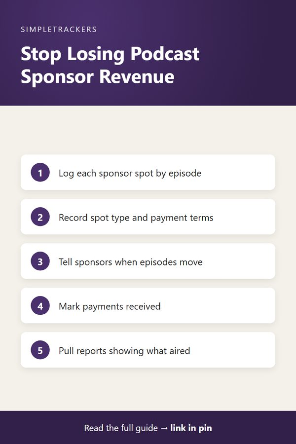

<!doctype html>
<html lang="en">
<head>
<script async src="https://pagead2.googlesyndication.com/pagead/js/adsbygoogle.js?client=ca-pub-7383810158576704" crossorigin="anonymous"></script>
<meta charset="utf-8">
<title>Sponsorship and Affiliate Link Tracking: Never Lose Revenue Again</title>
<meta name="viewport" content="width=device-width, initial-scale=1">
<meta name="description" content="Track podcast sponsorship spots and affiliate links per episode so you never miss a read, a deliverable, or a payment.">
<link rel="canonical" href="https://ghengoy.github.io/podcast-producer-tracker/sponsorship-and-affiliate-tracking.html">
<meta property="og:type" content="article">
<meta property="og:title" content="Sponsorship and Affiliate Link Tracking: Never Lose Revenue Again">
<meta property="og:description" content="Track podcast sponsorship spots and affiliate links per episode so you never miss a read, a deliverable, or a payment.">
<meta property="og:url" content="https://ghengoy.github.io/podcast-producer-tracker/sponsorship-and-affiliate-tracking.html">
<meta property="og:image" content="https://ghengoy.github.io/podcast-producer-tracker/images/hero/sponsorship-and-affiliate-tracking.jpg">
<meta name="p:domain_verify" content="ed2ca7fb71cecfffeba5d895002ee1d1"/>
<script data-goatcounter="https://ghengoy.goatcounter.com/count" async src="//gc.zgo.at/count.js"></script>
<style>
  :root { --accent: #4A306D; --accent-dark: #32204A; --tint: #F1ECF7; --ink: #1f2328; --muted: #5d6470;
          --line: #e4e1da; --paper: #fbfaf7; --card: #ffffff; }
  * { box-sizing: border-box; }
  body { margin: 0; background: var(--paper); color: var(--ink); font-family: -apple-system, BlinkMacSystemFont, "Segoe UI", Roboto, "Helvetica Neue", Arial, sans-serif;
         font-size: 18px; line-height: 1.75; -webkit-font-smoothing: antialiased; }
  a { color: var(--accent); text-underline-offset: 3px; }
  a:hover { color: var(--accent-dark); }
  img { max-width: 100%; height: auto; }
  .site-header { background: var(--card); border-bottom: 1px solid var(--line); }
  .site-header .inner { max-width: 760px; margin: 0 auto; padding: 14px 20px; display: flex; align-items: center; justify-content: space-between; gap: 16px; flex-wrap: wrap; }
  .brand { font-weight: 700; color: var(--ink); text-decoration: none; font-size: 17px; display: flex; align-items: center; gap: 10px; }
  .brand-mark { width: 28px; height: 28px; border-radius: 8px; background: var(--accent); display: inline-block; position: relative; }
  .brand-mark::after { content: ""; position: absolute; left: 7px; top: 8px; width: 14px; height: 3px; background: #fff; border-radius: 2px;
                       box-shadow: 0 5px 0 #fff, 0 10px 0 rgba(255,255,255,.6); }
  .site-header nav { display: flex; gap: 18px; font-size: 15px; }
  .site-header nav a { color: var(--muted); text-decoration: none; }
  .site-header nav a:hover { color: var(--accent); }
  main { max-width: 760px; margin: 0 auto; padding: 32px 20px 56px; }
  article > h1, main > h1 { font-size: clamp(30px, 5vw, 42px); line-height: 1.2; letter-spacing: -0.02em; margin: 8px 0 12px; }
  h2 { font-size: 27px; line-height: 1.3; letter-spacing: -0.01em; margin: 52px 0 14px; padding-top: 6px; scroll-margin-top: 16px; }
  h3 { font-size: 21px; line-height: 1.35; margin: 32px 0 8px; }
  p { margin: 0 0 20px; }
  ul, ol { padding-left: 1.3em; margin: 0 0 22px; }
  li { margin-bottom: 8px; }
  li::marker { color: var(--accent); }
  strong { font-weight: 650; }
  .pillar-link { font-size: 15px; margin: 0 0 4px; }
  .pillar-link a { text-decoration: none; }
  .post-meta { color: var(--muted); font-size: 15px; margin: 0 0 24px; }
  .post-hero { margin: 0 0 28px; }
  .post-hero img { width: 100%; aspect-ratio: 16 / 9; object-fit: cover; border-radius: 14px; display: block; background: var(--tint); }
  figcaption { font-size: 13px; color: var(--muted); margin-top: 8px; line-height: 1.5; }
  figcaption a { color: var(--muted); }
  .toc { background: var(--card); border: 1px solid var(--line); border-radius: 12px; padding: 18px 22px 8px; margin: 0 0 32px; font-size: 16px; }
  .toc-title { font-weight: 700; margin: 0 0 8px; font-size: 14px; letter-spacing: .06em; text-transform: uppercase; color: var(--muted); }
  .toc ol { margin: 0 0 10px; }
  .toc li { margin-bottom: 4px; }
  .toc a { text-decoration: none; }
  .key-takeaways, .callout { border-radius: 12px; padding: 20px 24px 6px; margin: 0 0 30px; }
  .key-takeaways { background: var(--tint); border-left: 5px solid var(--accent); }
  .key-takeaways ul { margin-bottom: 14px; }
  .box-title { font-weight: 700; margin: 0 0 8px; font-size: 14px; letter-spacing: .06em; text-transform: uppercase; color: var(--accent-dark); }
  .callout { background: var(--card); border: 1px solid var(--line); border-left: 5px solid var(--accent); }
  .callout.note { border-left-color: #b7791f; }
  .callout.note .box-title { color: #8a5a12; }
  .steps { list-style: none; counter-reset: step; padding-left: 0; }
  .steps > li { counter-increment: step; position: relative; padding-left: 52px; margin-bottom: 18px; }
  .steps > li::before { content: counter(step); position: absolute; left: 0; top: 0; width: 34px; height: 34px; border-radius: 50%;
                        background: var(--accent); color: #fff; font-weight: 700; font-size: 16px; display: flex; align-items: center; justify-content: center; }
  .table-wrap { overflow-x: auto; margin: 0 0 28px; border: 1px solid var(--line); border-radius: 12px; background: var(--card); }
  table { border-collapse: collapse; width: 100%; font-size: 16px; line-height: 1.5; }
  th, td { text-align: left; padding: 12px 16px; border-bottom: 1px solid var(--line); vertical-align: top; }
  th { background: var(--tint); color: var(--accent-dark); font-weight: 700; }
  tr:last-child td { border-bottom: 0; }
  .pin-figure { margin: 36px auto; max-width: 400px; text-align: center; }
  .pin-figure img { border-radius: 12px; box-shadow: 0 10px 30px rgba(0,0,0,.12); display: block; }
  blockquote { margin: 0 0 24px; padding: 4px 0 4px 20px; border-left: 3px solid var(--line); color: var(--muted); font-style: italic; }
  .post-cta { display: flex; gap: 24px; align-items: center; background: var(--card); border: 1px solid var(--line); border-top: 5px solid var(--accent);
              border-radius: 14px; padding: 24px; margin: 48px 0 8px; }
  .post-cta img { width: 150px; border-radius: 10px; flex-shrink: 0; }
  .post-cta h3 { margin: 2px 0 6px; }
  .post-cta p { margin-bottom: 12px; font-size: 16px; }
  .cta-kicker { font-size: 13px !important; letter-spacing: .06em; text-transform: uppercase; color: var(--muted); margin: 0 !important; }
  .buy-button { display: inline-block; background: var(--accent); color: #fff !important; padding: 12px 22px; border-radius: 10px; text-decoration: none; font-weight: 700; font-size: 16px; }
  .buy-button:hover { background: var(--accent-dark); }
  .product-box { background: var(--card); border: 1px solid var(--line); border-radius: 14px; padding: 24px; margin: 24px 0 36px; display: grid; grid-template-columns: 200px 1fr; gap: 0 24px; align-items: center; }
  .product-box img { width: 200px; border-radius: 10px; grid-row: span 3; }
  .product-box h3 { margin: 0 0 6px; }
  .product-box p { margin-bottom: 12px; font-size: 16px; }
  .product-grid { display: grid; grid-template-columns: repeat(auto-fill, minmax(160px, 1fr)); gap: 16px; margin: 12px 0 36px; }
  .product-card { display: flex; flex-direction: column; gap: 4px; background: var(--card); border: 1px solid var(--line); border-radius: 12px; padding: 12px; color: var(--ink); text-decoration: none; font-size: 15px; line-height: 1.4; }
  .product-card:hover { border-color: var(--accent); }
  .product-card img { width: 100%; border-radius: 8px; margin-bottom: 4px; }
  .product-card span { color: var(--muted); }
  .product-card .price { color: var(--accent); font-weight: 700; }
  .post-list { list-style: none; padding: 0; display: grid; gap: 16px; }
  .post-list li { margin: 0; }
  .post-card { display: flex; gap: 18px; background: var(--card); border: 1px solid var(--line); border-radius: 14px; overflow: hidden; color: var(--ink); text-decoration: none; }
  .post-card:hover { border-color: var(--accent); }
  .post-card img { width: 200px; object-fit: cover; flex-shrink: 0; background: var(--tint); }
  .post-card-text { display: flex; flex-direction: column; gap: 6px; padding: 16px 18px 16px 0; }
  .post-card-text strong { font-size: 19px; line-height: 1.35; }
  .post-card-desc { color: var(--muted); font-size: 15px; line-height: 1.55; }
  .post-card-date { color: var(--muted); font-size: 13px; }
  .site-footer { border-top: 1px solid var(--line); background: var(--card); color: var(--muted); font-size: 15px; }
  .site-footer .inner { max-width: 760px; margin: 0 auto; padding: 28px 20px; display: flex; justify-content: space-between; gap: 16px; flex-wrap: wrap; }
  .site-footer p { margin: 0; }
  @media (max-width: 600px) {
    body { font-size: 17px; }
    h2 { font-size: 23px; margin-top: 40px; }
    .post-cta, .post-card { flex-direction: column; }
    .post-cta img { width: 120px; }
    .post-card img { width: 100%; aspect-ratio: 16 / 9; }
    .post-card-text { padding: 0 16p
<header class="site-header"><div class="inner">
<a class="brand" href="index.html"><span class="brand-mark" aria-hidden="true"></span>Podcast Production</a>
<nav><a href="index.html">Guides</a><a href="pillar-guide.html">Start here</a></nav>
</div></header>
<main>
<article>
<h1>Sponsorship and Affiliate Link Tracking: Never Lose Revenue Again</h1>
<p class="pillar-link"><a href="pillar-guide.html">&larr; Back to the Complete Podcast Production Guide</a></p>
<p class="post-meta"><time datetime="2026-08-13">August 13, 2026</time> &middot; 5 min read</p>
<figure class="post-hero"><figcaption>Photo: <a href="https://stocksnap.io/photo/headphones-desk-KKOQ2ZWHO1" rel="nofollow">FOCA Stock</a>, <a href="https://creativecommons.org/publicdomain/zero/1.0/" rel="license nofollow">CC0</a></figcaption></figure>
<div class="key-takeaways">
<p class="box-title">Key takeaways</p>
<ul>
<li><strong>Log every sponsor spot by episode:</strong> sponsor, spot type (pre-, mid- or post-roll), read-aloud or pre-recorded, and payment.</li>
<li><strong>Reschedules are the danger:</strong> when a sponsored episode moves, the tracker tells you to notify the sponsor.</li>
<li><strong>Log affiliate links per episode:</strong> so you can connect income in your dashboards back to the episode that earned it.</li>
<li><strong>Proof builds renewals:</strong> a report of exactly which episodes ran an ad is what turns a one-time deal into a recurring one.</li>
</ul>
</div>
<nav class="toc" aria-label="Contents"><p class="toc-title">In this guide</p>
<ol>
<li><a href="#sponsorship-tracking-the-real-game">Sponsorship Tracking: The Real Game</a></li>
<li><a href="#affiliate-link-tracking-follow-the-revenue">Affiliate Link Tracking: Follow the Revenue</a></li>
<li><a href="#building-trust-with-sponsors">Building Trust with Sponsors</a></li>
<li><a href="#keeping-it-simple">Keeping It Simple</a></li>
</ol></nav>
<p>Sponsorships and affiliate commissions are where podcast revenue happens. But revenue also disappears quickly if you're not tracking where sponsorship spots air and which affiliate links are actually included in episodes.</p>

<p>A sponsor pays for three episodes, but did their ad really run in all three? You promised to include an affiliate link in show notes, but did you forget for Episode 7? Money sits on the table because the tracking isn't there.</p>

<p>Most podcasters handle sponsorships through email conversations and loose notes. "Acme Tools wants three mid-roll spots for $500 total." You mentally note which episodes. But when September arrives and you're three shows deep, you can't remember whether Episode 15 actually had the Acme ad:</p>

<ul>
<li>You look back at recordings and can't tell whether you read the ad-lib or skipped it.</li>
<li>Show notes from that episode are buried in your Google Drive.</li>
<li>You're not certain, so you don't charge the sponsor confidently.</li>
</ul>

<p>Affiliate links are worse. You include dozens across your episodes: products mentioned, tools recommended, books discussed. Without tracking, you have no idea which links generate revenue or which episode brought in the most affiliate income. You repeat recommendations that don't convert and skip ones that do, purely by accident.</p>

<h2 id="sponsorship-tracking-the-real-game">Sponsorship Tracking: The Real Game</h2>

<p>A sponsor agreement typically specifies:</p>

<ul>
<li><strong>Episodes:</strong> which episodes they're featured in</li>
<li><strong>Spot type:</strong> pre-roll, mid-roll, or post-roll</li>
<li><strong>Format:</strong> read-aloud or pre-recorded</li>
<li><strong>Payment:</strong> the amount</li>
</ul>

<p>If the deal is "three $500 spots across episodes 20, 21, and 23," your goal is ads for that sponsor in exactly those three episodes, no more, no less.</p>

<div class="callout note">
<p class="box-title">What goes wrong without tracking</p>
<p>You get sick and reschedule Episode 21. Nobody tells the sponsor. It publishes on a different date than promised, the sponsor's tracking code shows the ad ran when they didn't expect it, and they dispute the billing. Or you simply forget Episode 21 has a sponsor requirement and publish it without the ad. Either way: relationship damaged, payment disputed.</p>
</div>

<p>With tracking, you have a sponsorship column or section in your episode tracker:</p>

<div class="table-wrap">
<table>
<thead><tr><th>Episode</th><th>Sponsor</th><th>Spot</th></tr></thead>
<tbody>
<tr><td>Episode 20</td><td>Acme Tools</td><td>Mid-roll</td></tr>
<tr><td>Episode 21</td><td>Acme Tools</td><td>Mid-roll</td></tr>
<tr><td>Episode 23</td><td>Acme Tools</td><td>Pre-roll</td></tr>
</tbody>
</table>
</div>

<p>When you reschedule Episode 21, you immediately see it's a sponsored episode and notify the sponsor of the date change. You track whether the ad was actually recorded and included. You can pull a report for the sponsor showing exactly which episodes ran their promotion.</p>

<div class="callout tip">
<p class="box-title">Pro tracking tip</p>
<p>Include the deal details in your tracker: sponsor name, number of spots, duration, payment amount, and payment date. When you invoice, everything is documented. If a sponsor questions a charge, you have proof of what was agreed and what aired.</p>
</div>

<figure class="pin-figure">

<figcaption>Save this summary to Pinterest for later.</figcaption>
</figure>

<h2 id="affiliate-link-tracking-follow-the-revenue">Affiliate Link Tracking: Follow the Revenue</h2>

<p>Affiliate links are more flexible than sponsorships but also easier to lose track of. You mention a book on episode 12 and include the Amazon affiliate link in show notes. You recommend a hosting service on episode 18 with their referral code. You talk about a productivity tool on episode 25 and link their affiliate program.</p>

<p>Without tracking, those links are scattered across show notes that nobody's cataloging. You can't answer questions like:</p>

<ul>
<li>"Which episodes had product recommendations?"</li>
<li>"Did my affiliate income spike when I recommended X?"</li>
<li>"Is that link still in the show notes?"</li>
</ul>

<p>With tracking, you log which affiliate links went into which episodes:</p>

<div class="table-wrap">
<table>
<thead><tr><th>Episode</th><th>Affiliate link logged</th></tr></thead>
<tbody>
<tr><td>Episode 12</td><td>Amazon affiliate: Book X (link)</td></tr>
<tr><td>Episode 18</td><td>Hosting affiliate: Provider Y (code 2026-A18)</td></tr>
</tbody>
</table>
</div>

<p>When you log into your affiliate dashboards weeks later and see income attributed to that hosting provider, you check your tracker and confirm it was Episode 18 where you promoted them. You can connect cause to effect.</p>

<p>That insight is valuable:</p>

<ul>
<li><strong>A link that converts</strong> tells you your audience responds to that kind of recommendation, so you can mention similar tools in future episodes strategically.</li>
<li><strong>A link that barely converts</strong> tells you listeners aren't responding to that type of recommendation, so you adjust future content.</li>
</ul>

<h2 id="building-trust-with-sponsors">Building Trust with Sponsors</h2>

<p>Sponsors are more likely to return and renew if you can prove professionalism. When a sponsor asks, "What's the listener completion rate on episodes where we ran ads?" you can pull your tracker and give a thoughtful answer backed by data.</p>

<p>You know which episodes had their ad, you can cross-reference listener numbers, and you provide real metrics. That's the difference between a one-time $500 deal and a recurring monthly sponsorship.</p>

<p>Affiliate programs work similarly. If you track and optimize which links convert, you're more likely to hit signup bonuses or minimum payout thresholds. You're also more likely to receive exclusive offers, because you're clearly engaged and tracking performance seriously.</p>

<h2 id="keeping-it-simple">Keeping It Simple</h2>

<p>You don't need complex accounting software. You just need one place where you record:</p>

<ul>
<li>Which episodes have paid sponsorships, and which sponsor</li>
<li>Which affiliate links are in which episodes</li>
<li>Basic payment and commission notes</li>
</ul>

<p>When sponsorship payments come in, mark them received. When affiliate income clears, cross-reference which episodes contributed. Over time, you'll have actual data about what revenue comes from which content.</p>

<p>The Podcast Producer &amp; Episode Management Tracker includes dedicated fields for sponsorship deals and affiliate links. This keeps sponsor information and revenue tied directly to episodes. No more scattered notes or forgotten deals. One place to track every dollar that's supposed to come in.</p>

<p>Start tracking sponsorships and affiliate income properly with the <a href="https://kimnet8.gumroad.com/l/eagpjf">Podcast Producer & Episode Management Tracker</a>. Professional tracking leads to professional revenue.</p>

<aside class="post-cta">

<div><p class="cta-kicker">Make it easy to keep track</p>
<h3>Podcast Producer & Episode Management Tracker</h3>
<p>A ready-to-use spreadsheet and guide for tracking episodes from idea to publish.</p>
<p><a class="buy-button" href="https://kimnet8.gumroad.com/l/eagpjf">Get the Tracker &middot; $19.99</a></p></div>
</aside>

</article>
</main>
<footer class="site-footer"><div class="inner">
<p><a href="https://podcast-producer-tracker.beehiiv.com/subscribe">Get an email when new guides go live</a></p>
<p>&copy; 2026 <a href="/">SimpleTrackers</a> &middot; <a href="/about.html">About</a> &middot; <a href="/contact.html">Contact</a> &middot; <a href="/privacy.html">Privacy</a></p>
</div></footer>tps://podcast-producer-tracker.beehiiv.com/subscribe">Get an email when new guides go live</a></p>
<p>&copy; 2026 SimpleTrackers</p>
</div></footer>
</body>
</html>
